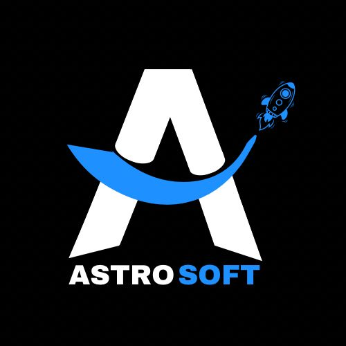

SOBRE O NOSSO GRUPO
Astrosoft é um grupo criado pelos alunos do primeiro período do Curso Ciência da Computação, Unifagoc. Composto pelos alunos: Theilor Martins, Nícolas Pacheco, William Soares, Lorena Ferreira, Nathalia Bênis e Maicoln. O objetivo dessa página é desenvolver uma ferramenta capaz de otimizar e ajudar o trabalho de profissionais da área de Educação Física. E, a partir disso, gerar feedbacks para promover nosso desenvolvimento e a apresentação do trabalho proposto em nosso curso.
VOLTAR

Colmeia Astrosoft - Unifagoc